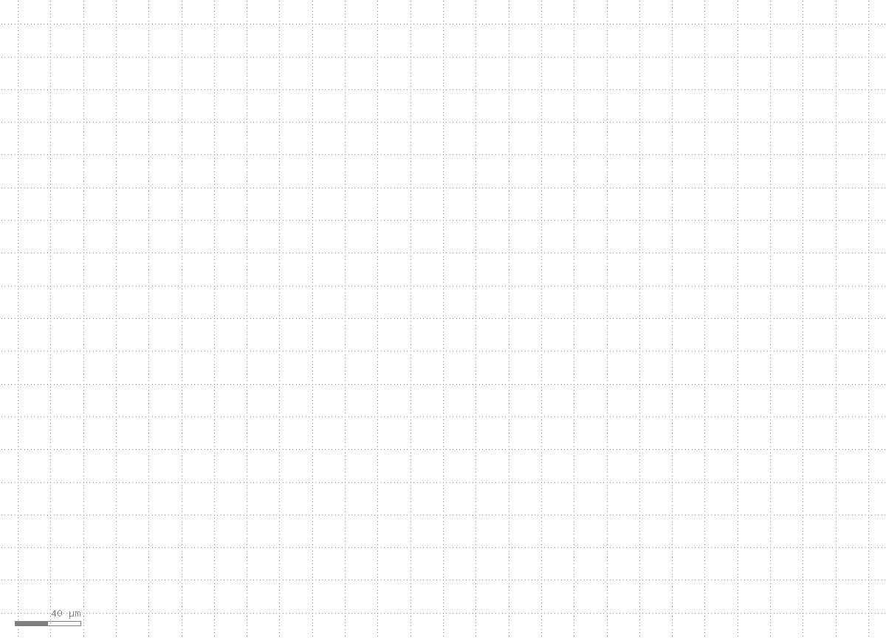
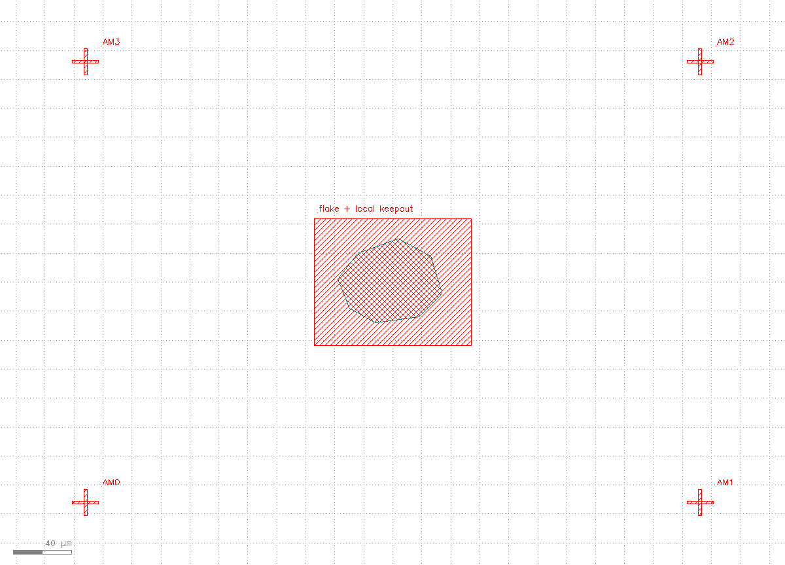
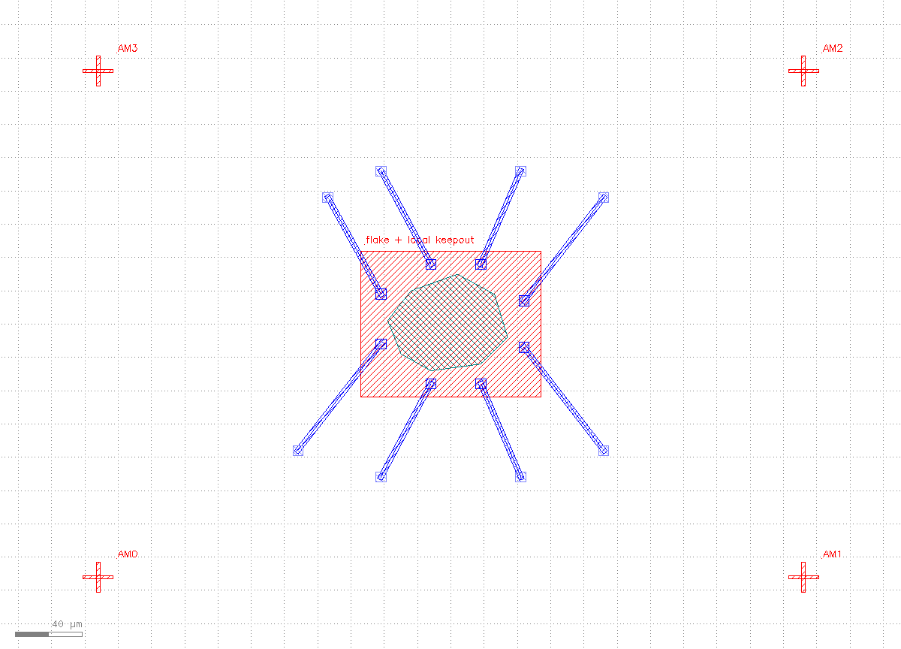
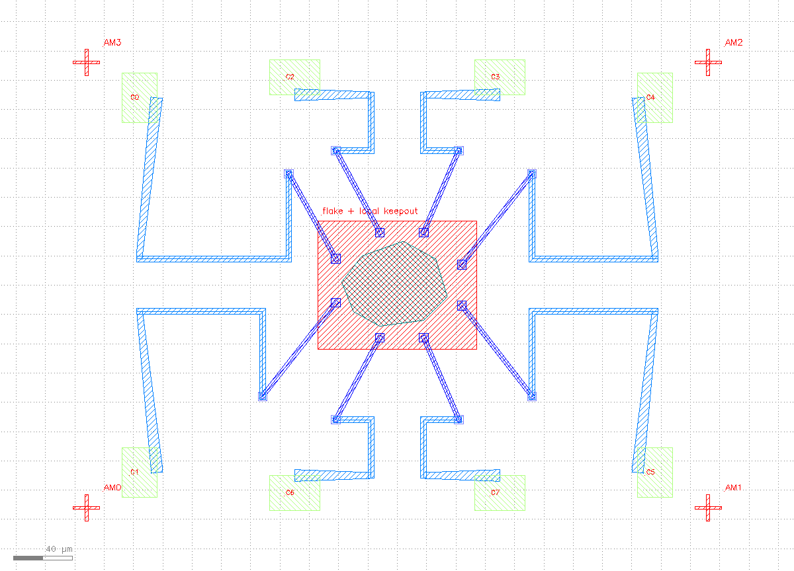
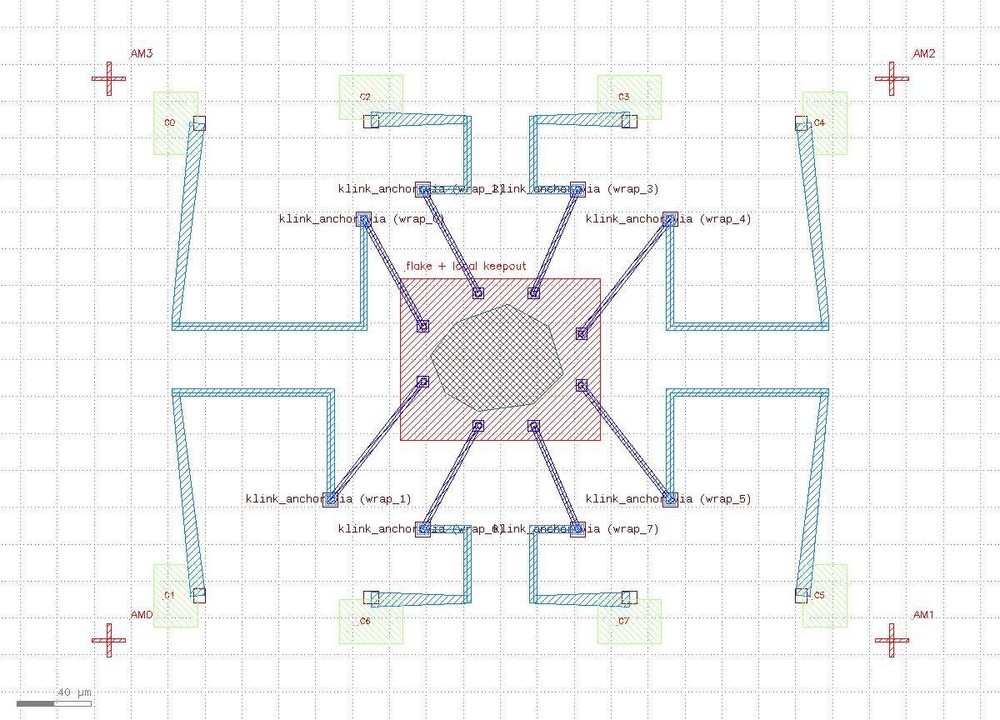
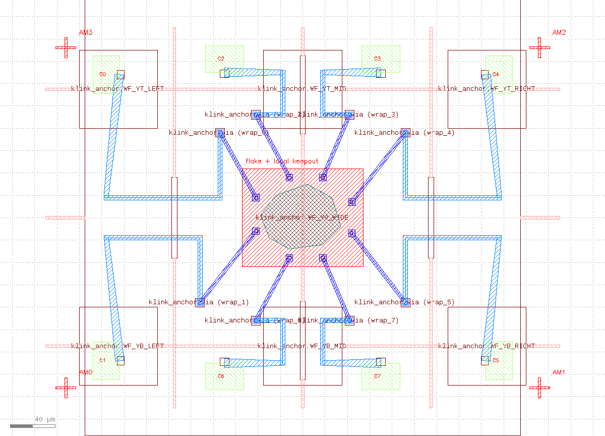
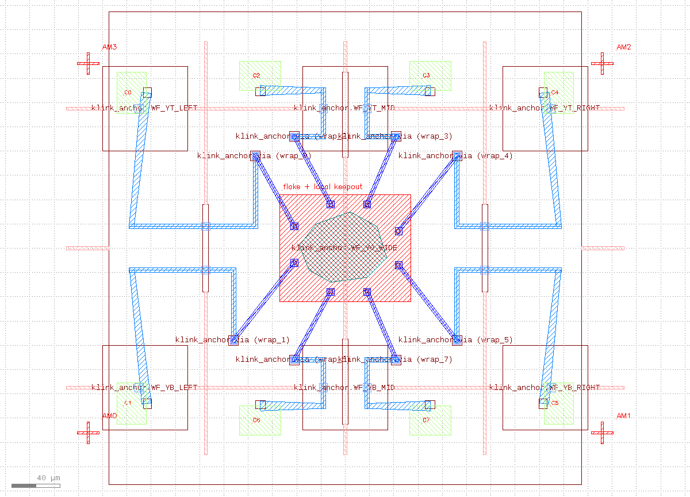
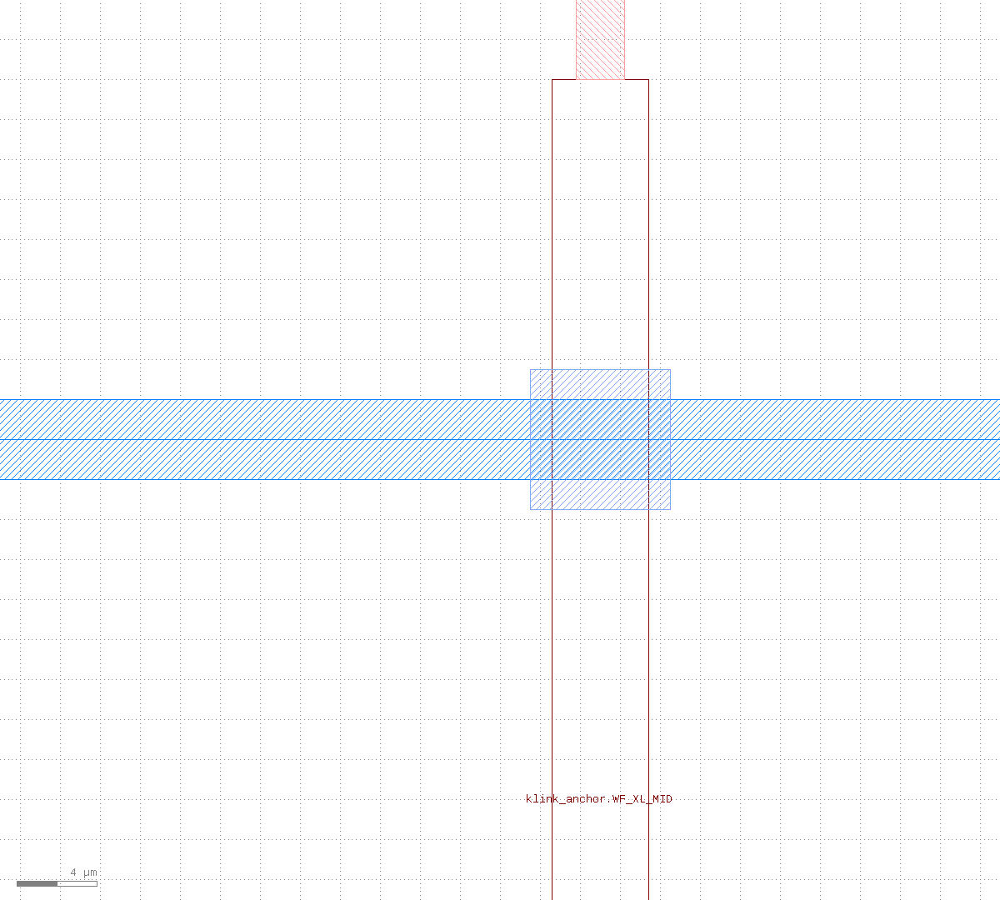
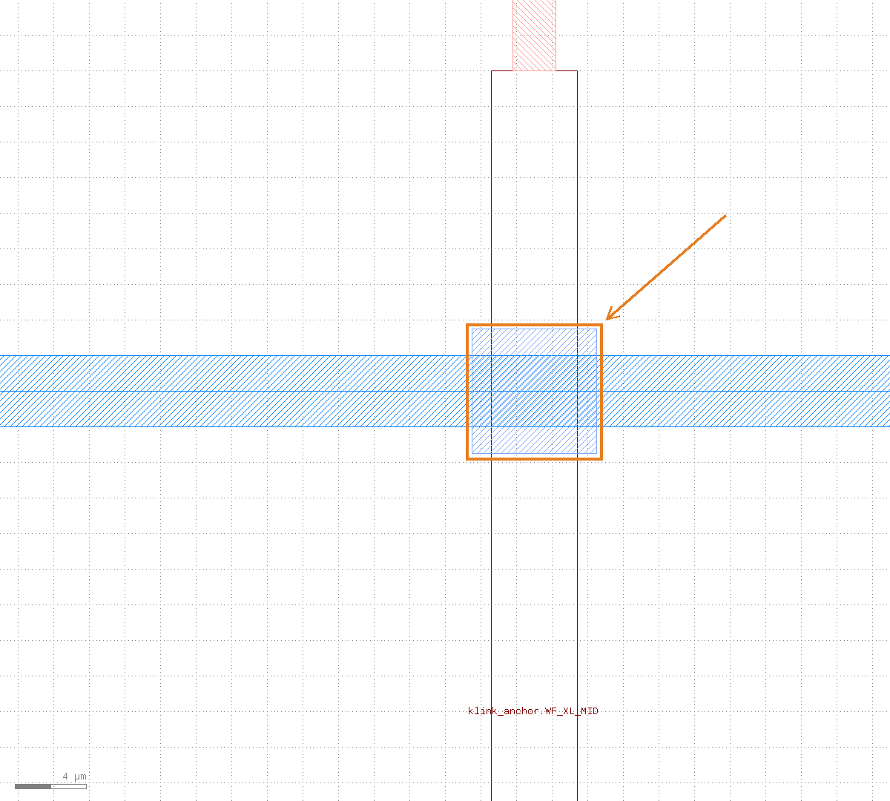

Prerequisites
- Install klink:
pip install klayout-klink(one command installs klink plus its Rust kernels -- no third-party scientific libraries needed). - KLayout running with the klink plugin loaded (RPC port defaults to
8765). - Scaffold a project and enter it:
klink init nano-demo && cd nano-demo-- the full script ispython example_template/nanodevice/ebl_wraparound.py --live(add--keepto keep the generated cell around for inspection). In a repo checkout the equivalent ispython -m examples_klink.public.demos.nanodevice.ebl_wraparound --live --keep.
build_wraparound_demo() into 7 observable stages. Construction order is fixed: 4 corner alignment crosses (3 items each) -> the flake polygon -> the keepout box + its label -> 8 contact groups (7 items each, in this fixed order: contact box / M1 stub / via / M2 wraparound path / taper transition / pad / label) -> stitch patches -> writefield keepout boxes. The tutorial slices shape_items along this real order -- there is no tutorial-only drawing logic here.1Create the cell + plan the layers
Every layer here is example-owned (WRAP_LAYERS in example_template/nanodevice/ebl_wraparound.py) -- klink ships no process layers of its own. The real script uses a generic _ensure_layers helper that scans every (layer, datatype) pair that actually appears in shape_items and creates it, including klink's reserved writefield keepout layer 900/0 (it shows up automatically because the writefield obstacle boxes are already shape items -- no separate declaration needed):
| Layer | Purpose |
|---|---|
30/0 | Flake (the device's active region) |
10/0 | M1 (near-field contact wiring) |
11/0 | M2 (wraparound routing to distant pads) |
40/0 | Via (contact via) |
20/0 | Probe pads |
6/0 | Labels + alignment marks + local keepout box |
113/0 | Writefield stitch patches |
900/0 | klink's reserved writefield keepout layer (appears automatically) |
999/99 | klink's reserved Port marker layer |
999/1 | klink's reserved Anchor marker layer |
from klink import KLinkClient
from klink.domains.nanodevice.devices.wraparound import (
ANCHOR_LAYER, CELL, PORT_LAYER, build_wraparound_demo,
)
def _ensure_layers(client, items):
seen = set()
for item in items:
key = (int(item["layer"]), int(item.get("datatype", 0)))
if key not in seen:
seen.add(key)
client.layer_ensure(key[0], key[1], name=f"NANODEVICE_{key[0]}_{key[1]}")
with KLinkClient(port=PORT).connect() as c:
bundle = build_wraparound_demo(WRAP_LAYERS)
c.cell_create(CELL)
_ensure_layers(c, bundle["shape_items"])
c.call("port.set_layer", {"layer": PORT_LAYER})
c.call("anchor.set_layer", {"layer": ANCHOR_LAYER})
2Draw the flake + local keepout + alignment marks
An irregular polygon flake sits at the center -- the device's real active region -- wrapped in a local keepout box ([-54,-44,54,44], labeled "flake + local keepout") that keeps later wiring at a safe distance. Four alignment crosses sit in the corners for the EBL system's global alignment pass:
c.shape_insert_many(CELL, bundle["shape_items"][0:15]) # 12 alignment-cross items + flake polygon + keepout box + text
30/0) + local keepout box (6/0) + four corner alignment crosses (6/0).3Draw the near-field contacts + vias
Eight narrow M1 stubs (C0-C7) reach out from the flake, each running diagonally from a contact point near the flake edge to its own via -- near-field wiring, at roughly the flake's own scale:
contact_block = bundle["shape_items"][15:71] # 8 groups x 7 items
stage3 = [it for i, it in enumerate(contact_block) if i % 7 in (0, 1, 2)] # contact box / M1 stub / via
c.shape_insert_many(CELL, stage3)
10/0) + 8 vias (40/0), radiating outward from the keepout box like spider legs.4Route the wraparound to the probe pads
This is where the name "wraparound" comes from: instead of a straight line from via to pad, each route first runs horizontally or vertically out toward the chip boundary, then turns toward its distant probe pad -- this spreads all 8 pads evenly around the chip perimeter while dodging the flake and neighboring routes:
stage4 = [it for i, it in enumerate(contact_block) if i % 7 in (3, 4, 5, 6)] # M2 wraparound path / taper / pad / label
c.shape_insert_many(CELL, stage4)
11/0, with tapered transitions) + 8 probe pads (20/0, labeled C0-C7).5Mark Port + Anchor intent
This is where it diverges from the Hall bar tutorial: here the geometry is drawn by hand first, and Port/Anchor markers are added after the fact -- not as an upstream routing intent. Writefield stitch corridors are a hard constraint, so the path shape has to be pinned to the corridor layout before anything runs; klink's route solver isn't the right tool for that kind of constrained, pre-determined geometry. Port/Anchor here record intent for the validation pass in stage 7:
for port in bundle["port_marks"]: # 16: 8 contacts + 8 pads
payload = dict(port); payload["cell"] = CELL
c.call("port.mark", payload)
for anchor in bundle["anchor_marks"][0:8]: # 8 via waypoint anchors
payload = dict(anchor); payload["cell"] = CELL
c.call("anchor.mark", payload)
999/99) + 8 via waypoint Anchors (999/1, labeled via (wrap_0) ... via (wrap_7)).6Plan the writefield obstacles
This is the real difference from the Hall bar tutorial. klink.domains.nanodevice.ebl.writefield.plan_writefields() divides the 460x340 um chip into a 4x4 grid of 115 um writefields, and draws a keepout obstacle box (klink's reserved layer 900/0) along every writefield boundary -- except at 11 pre-planned "crossing windows." Wiring may only cross a writefield boundary at one of these windows; the windows themselves are marked with corridor-kind Anchors:
obstacle_items = bundle["shape_items"][71 + bundle["patch_report"]["patch_count"]:] # 17 keepout boxes on 900/0
c.shape_insert_many(CELL, obstacle_items)
for anchor in bundle["anchor_marks"][8:]: # 11 corridor window anchors
payload = dict(anchor); payload["cell"] = CELL
c.call("anchor.mark", payload)
900/0) + 11 corridor-window Anchors (labeled WF_XL_MID, WF_Y0_WIDE, etc.) -- every route drawn so far passes cleanly through a window gap, never through the wall.7Add stitch patches + finish
Field-stitching in real lithography carries alignment error, so generate_wf_patches() (ported from Klayout-Router's Auto-patching macro) drops a square patch everywhere a drawn route crosses a writefield boundary, to compensate. Last, look at the whole chip and one detail:
patch_items = bundle["shape_items"][71:71 + bundle["patch_report"]["patch_count"]]
c.shape_insert_many(CELL, patch_items)
view.zoom_fit): flake + 8 contacts + 8 wraparound routes + writefield grid/keepout/corridors + 8 pads + 12 stitch patches.
C0 net's M2 wraparound route crossing the x=-115 writefield boundary, landing exactly inside the WF_XL_MID corridor window. The gray square is the stitch patch; note the keepout wall reappearing just above the window.
Verify, don't just look
As the tutorials home page says: screenshots are for people, not proof of done. Here's the actual build report from this run:
{
"shape_items": 100,
"ports": 16,
"anchors": 19,
"patches": 12,
"wf_obstacles": 17,
"wf_crossings": 20,
"wf_crossing_violations": 0,
"route_centerline_overlaps": 0
}wf_crossings=20 with wf_crossing_violations=0 means all 20 boundary crossings made by the routed geometry land inside a pre-planned corridor window -- none of them punch straight through a keepout wall. route_centerline_overlaps=0 means the 8 different nets' route centerlines never overlap, so there's no short-risk between them. Together, that's what "this layout respects the writefield constraint" actually rests on -- not "it looks like it crosses cleanly."
Next steps
If you haven't read the first tutorial yet, start with Step-by-step: drawing a Hall bar device -- it's the prerequisite for this one: the same Port/Anchor/geometry-first loop, but there the wiring is mark-first, solve-second through klink's routing backend, instead of hand-drawn-first, marked-after like here. Edit WRAP_LAYERS and the crossing_windows passed into build_wraparound_demo to your own writefield size and corridor placement, rerun, and confirm wf_crossing_violations stays at 0. The full Port/Anchor field reference is in the MCP reference; for more on offline devices see Core concepts & tutorials · Offline device tutorial.